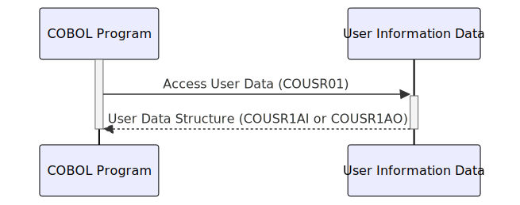

Gerado em: 1 de outubro de 2024
Título do Documento: Gerenciamento de Informações do Usuário
Descrição Resumida:
Este documento descreve a estrutura e função do copybook COUSR01, definindo como as informações do usuário são organizadas e armazenadas. Essa estrutura é crucial para autenticação do usuário, exibição de perfil e gerenciamento de contas em um sistema baseado em COBOL.
Histórias do Usuário: Como administrador do sistema, preciso de uma maneira padronizada de armazenar e recuperar informações do usuário para que eu possa gerenciar contas de usuário de forma eficaz.
Épico Relacionado: 6 - Gerenciamento de Usuários e Segurança
Requisitos Técnicos:
COUSR01 define duas estruturas de dados: COUSR1AI e COUSR1AO, ambas representando informações do usuário.COUSR1AI fornece uma lista detalhada de atributos do usuário, cada um com um rótulo e espaço de armazenamento.COUSR1AO oferece uma visão de acesso alternativa, potencialmente agrupando ou formatando dados de forma diferente.COMP, PIC X, PIC S9(4)) e comprimento definido, garantindo alocação de armazenamento adequada e interpretação de dados.USERIDI (ID do Usuário) e PASSWDI (Senha) são cruciais para identificação e autenticação do usuário.PASSWDI para protegê-lo de acesso não autorizado.FNAMEI (Primeiro Nome) e LNAMEI (Sobrenome) armazenam detalhes básicos do usuário para personalização e manutenção de registros.USRTYPEI (Tipo de Usuário) provavelmente diferencia as funções do usuário (por exemplo, administrador, usuário padrão), impactando as permissões do sistema e o controle de acesso.ERRMSGI (Mensagem de Erro) sugere mecanismos de tratamento de erros relacionados aos dados do usuário, como tentativas de login inválidas ou falhas de validação de dados.COPY, tornando a estrutura de informações do usuário disponível.MOVE, DISPLAY).Modelos Relacionados:
TRNNAMEI: String Nome da TransaçãoTITLE01I: String Primeiro TítuloCURDATEI: String Data AtualPGMNAMEI: String Nome do ProgramaTITLE02I: String Segundo TítuloCURTIMEI: String Hora AtualFNAMEI: String Primeiro NomeLNAMEI: String SobrenomeUSERIDI: String ID do UsuárioPASSWDI: String SenhaUSRTYPEI: String Tipo de UsuárioERRMSGI: String Mensagem de ErroConfigurações:
Melhorias de Código:
USERIDI, FNAMEI, LNAMEI para garantir a integridade dos dados e evitar problemas potenciais de dados malformados.ERRMSGI para facilitar a depuração e solução de problemas.Melhorias de Segurança:
Diagrama Conceitual:
–Made by “Smart Engineering” (by Compass.UOL)–